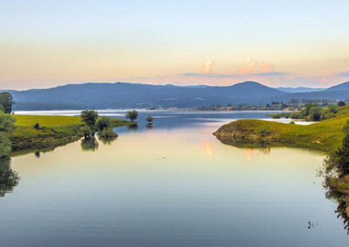
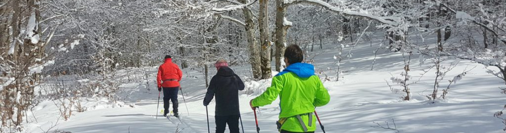
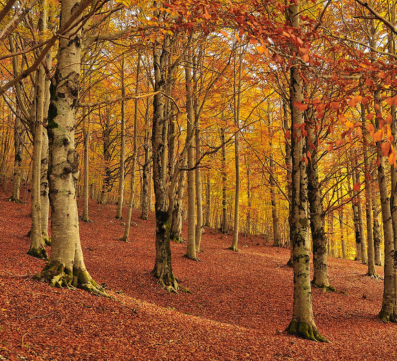
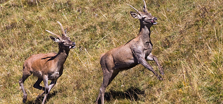
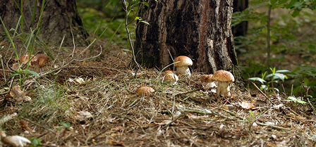
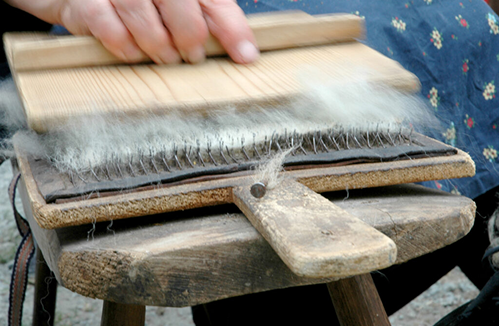
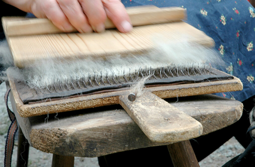

Parco Nazionale
della Sila
della Sila
Un altopiano millenario nel cuore della Calabria: boschi, laghi e borghi di
antiche tradizioni.
Il Parco
Il Parco Nazionale della Sila, situato nel cuore della Calabria, è un
altopiano montuoso che si estende su circa 150.000 ettari, caratterizzato da
boschi secolari, laghi pittoreschi e antichi borghi rurali.
Istituito come parco nel 2002, ma già riconosciuto come Riserva della
Biosfera UNESCO, questo territorio vanta una storia millenaria, intrecciata
con le tradizioni agro-pastorali e con un patrimonio culturale che comprende
feste popolari, artigianato e enogastronomia di eccellenza.
I visitatori che scelgono di esplorare la Sila possono scoprire un ambiente montano unico nel contesto mediterraneo, in cui la natura e l’uomo hanno saputo convivere in modo armonioso per secoli.

I visitatori che scelgono di esplorare la Sila possono scoprire un ambiente montano unico nel contesto mediterraneo, in cui la natura e l’uomo hanno saputo convivere in modo armonioso per secoli.
Punti d’Interesse
Tra i luoghi di maggior richiamo figura il Lago Cecita, un grande invaso
artificiale incastonato tra foreste di faggio e abete bianco.
Qui si trova anche il Centro Visita Cupone, gestito dall’Ente Parco, che offre percorsi didattici, un giardino geologico e recinti faunistici dove è possibile avvicinare cervi, daini e lupi in semi-cattività.
Un altro specchio d’acqua di grande fascino è il Lago Arvo, meta ideale per rilassarsi in barca o praticare sport acquatici a bassa intensità.
La Riserva Naturale del Fallistro, conosciuta anche come i Giganti della Sila, ospita monumentali pini larici e pini neri centenari.
Borghi come San Giovanni in Fiore, Camigliatello Silano e Lorica conservano tradizioni artigianali e culinarie, tra cui la lavorazione della lana, la tessitura e la produzione di formaggi tipici.
Qui si trova anche il Centro Visita Cupone, gestito dall’Ente Parco, che offre percorsi didattici, un giardino geologico e recinti faunistici dove è possibile avvicinare cervi, daini e lupi in semi-cattività.
Un altro specchio d’acqua di grande fascino è il Lago Arvo, meta ideale per rilassarsi in barca o praticare sport acquatici a bassa intensità.
La Riserva Naturale del Fallistro, conosciuta anche come i Giganti della Sila, ospita monumentali pini larici e pini neri centenari.
Borghi come San Giovanni in Fiore, Camigliatello Silano e Lorica conservano tradizioni artigianali e culinarie, tra cui la lavorazione della lana, la tessitura e la produzione di formaggi tipici.
Attività specifiche
Il trekking è l’attività regina della Sila, grazie a una rete di sentieri
ben tracciati che attraversano boschi fitti, radure e dorsali montane da cui
si gode di ampie vedute sull’intera regione.
In estate, la mountain bike trova percorsi adatti a tutti i livelli, con possibilità di noleggio in vari centri turistici.
Nei mesi invernali, invece, le abbondanti nevicate permettono di praticare sci di fondo e, in alcune zone, anche sci alpino.
Per gli amanti dell’equitazione, sono disponibili maneggi e itinerari a cavallo che consentono di esplorare angoli remoti del parco.
Non manca l’aspetto gastronomico: salumi come la ‘nduja, formaggi pecorini, patate IGP e funghi porcini sono solo alcune delle specialità da degustare nei ristoranti o durante le sagre locali.
Laboratori didattici e visite guidate organizzate dal parco e dalle cooperative del territorio offrono l’opportunità di approfondire la conoscenza dell’ecosistema silano e delle attività tradizionali, come l’apicoltura e la raccolta dei frutti del sottobosco.

In estate, la mountain bike trova percorsi adatti a tutti i livelli, con possibilità di noleggio in vari centri turistici.
Nei mesi invernali, invece, le abbondanti nevicate permettono di praticare sci di fondo e, in alcune zone, anche sci alpino.
Per gli amanti dell’equitazione, sono disponibili maneggi e itinerari a cavallo che consentono di esplorare angoli remoti del parco.
Non manca l’aspetto gastronomico: salumi come la ‘nduja, formaggi pecorini, patate IGP e funghi porcini sono solo alcune delle specialità da degustare nei ristoranti o durante le sagre locali.
Laboratori didattici e visite guidate organizzate dal parco e dalle cooperative del territorio offrono l’opportunità di approfondire la conoscenza dell’ecosistema silano e delle attività tradizionali, come l’apicoltura e la raccolta dei frutti del sottobosco.
Cenni su flora e fauna
La Sila è coperta prevalentemente da foreste di faggio, pino laricio e abete
bianco, che in autunno si tingono di colori spettacolari.
Le parti più alte dell’altopiano raggiungono circa 1.900 metri e ospitano specie endemiche, adattate a condizioni climatiche rigide per la latitudine.
L’area è un rifugio prezioso per il lupo appenninico, simbolo del parco, e per altre specie come il cervo e il capriolo, reintrodotti dopo aver rischiato l’estinzione locale.
Rapaci come la poiana e il falco pecchiaiolo sorvolano i cieli, mentre nei torrenti di montagna si possono trovare trote e altre specie di pesci d’acqua dolce.
Il sottobosco è ricchissimo di funghi e di piante officinali, sfruttate dalla tradizione erboristica calabrese.
Questi elementi naturali si intrecciano con la presenza umana, dando vita a paesaggi pastorali dove pascoli e foreste convivono armoniosamente.



Le parti più alte dell’altopiano raggiungono circa 1.900 metri e ospitano specie endemiche, adattate a condizioni climatiche rigide per la latitudine.
L’area è un rifugio prezioso per il lupo appenninico, simbolo del parco, e per altre specie come il cervo e il capriolo, reintrodotti dopo aver rischiato l’estinzione locale.
Rapaci come la poiana e il falco pecchiaiolo sorvolano i cieli, mentre nei torrenti di montagna si possono trovare trote e altre specie di pesci d’acqua dolce.
Il sottobosco è ricchissimo di funghi e di piante officinali, sfruttate dalla tradizione erboristica calabrese.
Questi elementi naturali si intrecciano con la presenza umana, dando vita a paesaggi pastorali dove pascoli e foreste convivono armoniosamente.
Informazioni utili
Il Parco Nazionale della Sila è facilmente raggiungibile dai principali
centri urbani calabresi, come Cosenza e Catanzaro, utilizzando strade
statali o regionali.
Per chi preferisce i mezzi pubblici, esistono bus che collegano alcune località silane alle città più grandi, ma l’auto risulta spesso la soluzione migliore per esplorare in libertà le varie zone del parco.
È consigliabile visitare la Sila in diverse stagioni: l’inverno offre paesaggi innevati ideali per gli sport sulla neve, la primavera e l’autunno regalano colori mozzafiato, mentre l’estate, con temperature più miti rispetto alla costa, permette di sfuggire alla calura e di fare escursioni in un clima gradevole.
Numerose strutture ricettive, dai rifugi ai B&B, garantiscono un buon livello di ospitalità, spesso accompagnato da una genuina accoglienza familiare. Prima di intraprendere un’escursione, è sempre bene informarsi sulle condizioni meteo e sulla presenza di eventuali restrizioni temporanee.
Nel rispetto della natura e delle norme del parco, è vietato abbandonare rifiuti, raccogliere piante o disturbare la fauna selvatica. Grazie all’impegno costante dei residenti e delle istituzioni, il Parco Nazionale della Sila rimane un esempio di come la conservazione dell’ambiente possa conciliarsi con lo sviluppo del turismo sostenibile e con la valorizzazione di un patrimonio culturale unico nel suo genere.
Un aspetto affascinante riguarda la lavorazione della lana, che per secoli è stata una delle principali fonti di sostentamento delle comunità silane. Ancora oggi, alcuni laboratori artigianali conservano metodi tradizionali di filatura e tintura, tramandati di generazione in generazione.
Chi visita il parco in primavera può assistere alla transumanza, il suggestivo trasferimento stagionale delle greggi, che mostra come la vita pastorale si intrecci con i ritmi naturali del territorio.
Anche sotto il profilo gastronomico, i prodotti caseari rivestono un ruolo essenziale: formaggi come il caciocavallo silano, la provola affumicata e il pecorino conquistano i palati dei visitatori, i quali possono degustarli abbinati a confetture o miele di castagno.
Questa sinergia tra natura e cultura fa sì che la Sila rappresenti non solo un’area di straordinario pregio ambientale, ma anche un luogo in cui le tradizioni locali contribuiscono a mantenere viva l’identità di un popolo profondamente legato alle proprie origini e alla terra che lo circonda.
Per chi preferisce i mezzi pubblici, esistono bus che collegano alcune località silane alle città più grandi, ma l’auto risulta spesso la soluzione migliore per esplorare in libertà le varie zone del parco.
È consigliabile visitare la Sila in diverse stagioni: l’inverno offre paesaggi innevati ideali per gli sport sulla neve, la primavera e l’autunno regalano colori mozzafiato, mentre l’estate, con temperature più miti rispetto alla costa, permette di sfuggire alla calura e di fare escursioni in un clima gradevole.
Numerose strutture ricettive, dai rifugi ai B&B, garantiscono un buon livello di ospitalità, spesso accompagnato da una genuina accoglienza familiare. Prima di intraprendere un’escursione, è sempre bene informarsi sulle condizioni meteo e sulla presenza di eventuali restrizioni temporanee.
Nel rispetto della natura e delle norme del parco, è vietato abbandonare rifiuti, raccogliere piante o disturbare la fauna selvatica. Grazie all’impegno costante dei residenti e delle istituzioni, il Parco Nazionale della Sila rimane un esempio di come la conservazione dell’ambiente possa conciliarsi con lo sviluppo del turismo sostenibile e con la valorizzazione di un patrimonio culturale unico nel suo genere.
Un aspetto affascinante riguarda la lavorazione della lana, che per secoli è stata una delle principali fonti di sostentamento delle comunità silane. Ancora oggi, alcuni laboratori artigianali conservano metodi tradizionali di filatura e tintura, tramandati di generazione in generazione.
Chi visita il parco in primavera può assistere alla transumanza, il suggestivo trasferimento stagionale delle greggi, che mostra come la vita pastorale si intrecci con i ritmi naturali del territorio.
Anche sotto il profilo gastronomico, i prodotti caseari rivestono un ruolo essenziale: formaggi come il caciocavallo silano, la provola affumicata e il pecorino conquistano i palati dei visitatori, i quali possono degustarli abbinati a confetture o miele di castagno.
Questa sinergia tra natura e cultura fa sì che la Sila rappresenti non solo un’area di straordinario pregio ambientale, ma anche un luogo in cui le tradizioni locali contribuiscono a mantenere viva l’identità di un popolo profondamente legato alle proprie origini e alla terra che lo circonda.
 

SCOPRI IL PARCO DEL VESUVIO!
Scopri il simbolo indiscusso del Golfo di Napoli: un vulcano leggendario che
domina storia e panorama.